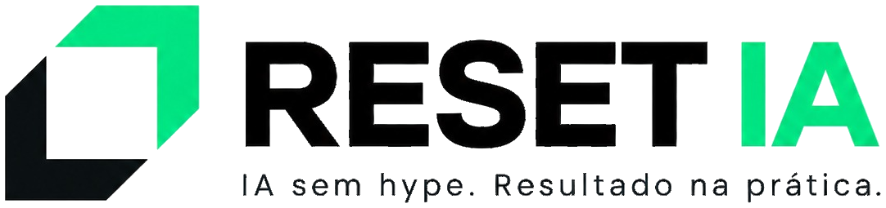

Fale conoscoArquiteto de IA e consultor de inovação. Muita prática, pouca teoria.
Quinze anos em tecnologia, com raízes em implantação de sistemas financeiros. Hoje atua como arquiteto de IA no centro de excelência de inteligência artificial da Unimed Nacional, onde conduz a trilha de Champions de IA com mais de 250 líderes do sistema Unimed, e constrói ferramentas para a saúde do discovery ao sistema em operação.
Como consultor e instrutor, já treinou e estruturou IA em empresas como IEL, Fortes Tecnologia, FortesPay e Longevidade Saudável. Certificações Oracle AI, CSPO e ACSM. Em formação contínua em engenharia de software, pós-graduação na FIAP e multiagentes no IBMEC.
Nada fictício. Exercício é feito com o documento real da sua área.
Mais mão que fala. Quem está na sala executa; o instrutor acompanha.
Resultado é número. O que não se mede não entra na proposta.